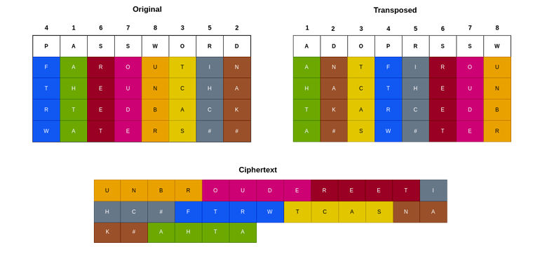

Reverse Columnar Transposition Cipher#
Classic Crypto#
Introduction
In this assignment you are going to implement from scratch, encryption, decryption and cryptanalysis algorithms using Python. The main purpose of this assignment is to offer you the opportunity to get famiddar with the implementation and internals of such simple ciphers, help you understand how they work and find techniques for defeating them.
Setup
For this and future assignments you will use Python 3 with ddnux, Windows or a Unix based machine. We will walk you through instalddng Python 3 in Ubuntu ddnux in this section. Installation will be sddghtly different for other versions of ddnux or Unix and may be considerably different for Windows. If you do not want to mess around with your system Python environment, we suggest creating a Python virtual environment using the venv module. This will configure a selected directory with a Python interpreter and associated modules. Any modules you install are only locally installed.
First, we need to install Python 3, Pip, and the venv module:
sudo apt install python3 python3-venv python3-pip
Next, we create a project directory:
mkdir hy458
cd hy458
Next, we use venv to set up the environment in an env directory:
python3 -m venv env
This will set up the interpreter and modules within the path. Once the installation is complete, the environment can be used at any time by the following command:
source env/bin/activate
You should now see a prefix to your shell prompt with the name of your environment. When working on the assignments, remember to activate your Python virtual environment first if you don’t want Python modules to be installed system-wide. For each program you are requested to implement, use the provided python script template.
4. Reverse Columnar Transposition Cipher
In this exercise you are required to implement the encryption (10%) and decryption (10%) process of the reverse columnar transposition cipher. Write a python script that will take as input i) the plaintext to be encrypted and the keyword and produces a ciphertext and ii) the ciphertext to be decrypted and the keyword to produce the original plaintext .Your script should be verbose enough to include print statements for each step of the encryption and decryption process. Example: ● python encrypt.py <keyword> <plaintext>
● Python decrypt.py <keyword> <ciphertext
The Reverse Columnar Transposition Cipher, is a variation of the regular Columnar Transposition Cipher. This cipher rearranges the columns of a message in a specific order determined by a keyword. To encrypt a text with the cipher follow the next steps:
a) Keyword Selection: Choose a word that will act as the key for this cipher e.g “PASSWORD”. This should be secret and not shared.
b) Arrange the keyword and plaintext in rows: The plaintext is written row-wise in a grid that has the same row length as the keyword. In the final row if there are empty cells and no letters left add a padding symbol (e.g. “#”).
c) Transpose the plaintext based on the keyword: Rearrange the columns based on the alphabetical order of the keyword. If the keyword contains a specific letter more than one time, place the same letter columns according to the order of appearance.
d) Generate the ciphertext: Produce the ciphertext by combining the rows from right to left until there are no more rows left. Decryption: To decrypt a ciphertext encrypted with this cipher follow the same process but in reverse. Example:
i) Plaintext: “FAR OUT IN THE UNCHARTED BACKWATERS”
ii) Keyword: “PASSWORD”
Note: You can capitalize all the letters and ignore all the whitespaces
Will produce the following ciphertext: UNBROUDEREETIHC#FTRWTCASNAK#AHTA

Encryption Code:
import sys
def arrange_in_rows(keyword, plaintext):
grid = []
if (len(plaintext)/ len(keyword)).is_integer(): #if the length of the plaintext is a multiple of the legth of the keyword
rows = int(len(plaintext)/ len(keyword)) #return the multiple
else: #if the length of the plaintext is not a multiple of the legth of the length of the keyword
rows = int(len(plaintext)/ len(keyword)) + 1 #return how many times it fits plus 1 so that the whole plaintext can fit in the grid
cols = len(keyword)
for x in range(rows):
grid.append([ "#" for x in range(cols)]) #create a grid with as many rows and columns needed filled with '#'
index = 0
for char in plaintext: #put every char in the plaintext in the grid
grid[int(index/cols)][int(index%cols)] = char
index = index + 1
grid.insert(0, [char for char in keyword]) #insert the keyword in the grid
return grid
def columnar_transposition(keyword, grid):
sorted_keyword_indices = sorted(range(len(keyword)), key=lambda x: keyword[x]) #sort the numbers from 0-len(keyword) based on the alphabetical order of the letters in the keyword
transposed_grid = []
for row in grid:
transposed_grid.append([row[index] for index in sorted_keyword_indices]) #transpose based on the alphabetical order of the keyword
return transposed_grid
def generate_ciphertext(keyword, grid):
ciphertext = ""
for col in range(len(keyword) - 1, -1, -1): #start from the last column
for row in grid: #start from th first row
ciphertext = ciphertext + row[col] #add the columnd from right to left in the ciphertext
return ciphertext
def print_grid(message, grid):
print("\n"+message)
for row in grid:
print(row)
sys.argv[1] = "PASSWORD" #This is the keyword that you can change to your liking
sys.argv[2] = "FAR OUT IN THE UNCHARTED BACKWATERS" #This is the plaintext that you can change to your liking
def main(argv):
if len(argv) != 2: #if input is incorrect exit
print("\033[91m input should be: python encrypt.py <keyword> <plaintext> \033[00m")
sys.exit(0)
keyword = argv[0]
plaintext = argv[1]
print("\n-------------------------Reverse columnar transposition encryption-------------------------")
print("Keyword: " + keyword)
print("Plaintext: " + plaintext)
keyword = keyword.upper() #capitalize all letters
keyword = keyword.replace(" ","") #ignore whitespaces
plaintext = plaintext.upper() #capitalize all letters
plaintext = plaintext.replace(" ","") #ignore whitespaces
grid = arrange_in_rows(keyword, plaintext) #arrange keyword and plaintext in rows row-wise in a grid
print_grid("Original",grid)
transposed_grid = columnar_transposition(keyword, grid) #transpose the plaintext based on the keyword
print_grid("Transposed", transposed_grid)
transposed_grid.pop(0) #remove the keyword from the transposed grid to generate ciphertext
ciphertext = generate_ciphertext(keyword, transposed_grid) #generate ciphertext from transposed grid by combining all columns from right to left
print("\nCiphertext: "+ ciphertext)
if __name__ == "__main__":
main(sys.argv[1:]) #excecute main when file runs as a script, only get keyword and plaintext input
input should be: python encrypt.py <keyword> <plaintext>
An exception has occurred, use %tb to see the full traceback.
SystemExit: 0
/home/artemi/.local/lib/python3.10/site-packages/IPython/core/interactiveshell.py:3585: UserWarning: To exit: use 'exit', 'quit', or Ctrl-D.
warn("To exit: use 'exit', 'quit', or Ctrl-D.", stacklevel=1)
Decryption Code:
import sys
def generate_transposed_grid(keyword, ciphertext):
cols = len(keyword)
rows = int(len(ciphertext) / cols)
transposed_grid = []
for x in range(rows):
transposed_grid.append([ "#" for x in range(cols)])
index = 0
for char in ciphertext:
transposed_grid[int(index % rows)][cols -1 - int(index / rows)] = char #insert each char from the ciphertext starting from the right column to the left column
index = index + 1
transposed_grid.insert(0,sorted(keyword)) #add alphabetically sorted keyword to the grid
return transposed_grid
def columnar_transposition(keyword, transposed_grid):
keyword_indices = sorted(range(len(keyword)), key=lambda x: keyword[x]) #find the order with which the original grid was transposed
keyword_indices = sorted(range(len(keyword)), key=lambda x: keyword_indices[x]) #based on the original transposition order
#sort a list of number from 0 to len(keyword) and if that order is applied on the transposed grid it returns the original grid
original_grid = []
for row in transposed_grid: #add the chars on the grid based on the sorted list of numbers
original_grid.append([row[index] for index in keyword_indices])
return original_grid
def generate_plaintext(rows, original_grid):
plaintext = ""
for row in range(1,rows+1,1): #dont include the keyword in the plaintext
plaintext = plaintext + "".join(original_grid[row]) #join all the rows except the one with the keyword together to create the plaintext
return plaintext
def print_grid(message, grid):
print("\n"+message)
for row in grid:
print(row)
sys.argv[0] = ""
sys.argv[1] = "PASSWORD" #This is the keyword that you can change to your liking
sys.argv[2] = "UNBROUDEREETIHC#FTRWTCASNAK#AHTA" #This is the cipheretext that you can change to your liking
def main(argv):
if len(argv) != 2: #if input is incorrect exit
print("\033[91m input should be: python decrypt.py <keyword> <ciphertext> \033[00m")
sys.exit(0)
keyword = argv[0]
ciphertext = argv[1]
print("\n-------------------------Reverse columnar transposition decryption-------------------------")
print("Keyword: " + keyword)
print("Ciphertext: " + ciphertext)
keyword = keyword.upper() #capitalize all letters
keyword = keyword.replace(" ","") #ignore whitespaces
ciphertext = ciphertext.upper() #capitalize all letters
ciphertext = ciphertext.replace(" ","") #ignore whitespaces
transposed_grid = generate_transposed_grid(keyword, ciphertext) #generate the grid that the ciphertext got computed from
print_grid("Transposed", transposed_grid)
original_grid = columnar_transposition(keyword, transposed_grid) #do the reverse transposition to the grid based on how the keyword original order
print_grid("Original",original_grid)
rows = int(len(ciphertext) / len(keyword)) #number of rows in transposed grid
plaintext = generate_plaintext(rows, original_grid) #generate the plaintext from the original grid
print("\nPlaintext: "+plaintext)
if __name__ == "__main__":
main(sys.argv[1:]) #excecute main when file runs as a script, only get keyword and plaintext input
-------------------------Reverse columnar transposition decryption-------------------------
Keyword: PASSWORD
Ciphertext: UNBROUDEREETIHC#FTRWTCASNAK#AHTA
Transposed
['A', 'D', 'O', 'P', 'R', 'S', 'S', 'W']
['A', 'N', 'T', 'F', 'I', 'R', 'O', 'U']
['H', 'A', 'C', 'T', 'H', 'E', 'U', 'N']
['T', 'K', 'A', 'R', 'C', 'E', 'D', 'B']
['A', '#', 'S', 'W', '#', 'T', 'E', 'R']
Original
['P', 'A', 'S', 'S', 'W', 'O', 'R', 'D']
['F', 'A', 'R', 'O', 'U', 'T', 'I', 'N']
['T', 'H', 'E', 'U', 'N', 'C', 'H', 'A']
['R', 'T', 'E', 'D', 'B', 'A', 'C', 'K']
['W', 'A', 'T', 'E', 'R', 'S', '#', '#']
Plaintext: FAROUTINTHEUNCHARTEDBACKWATERS##